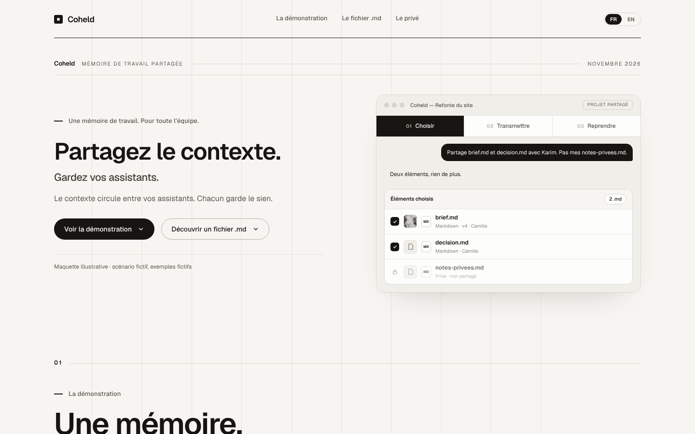
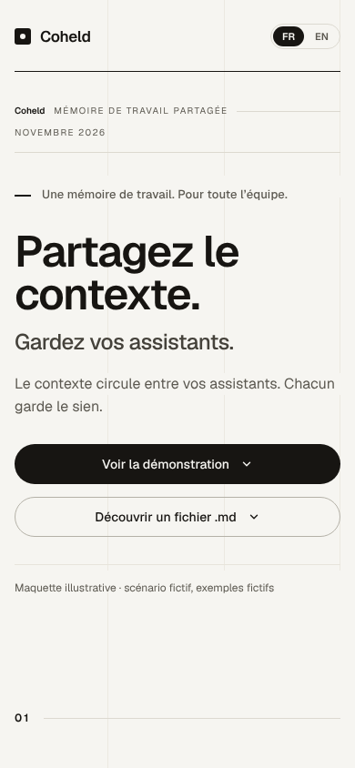
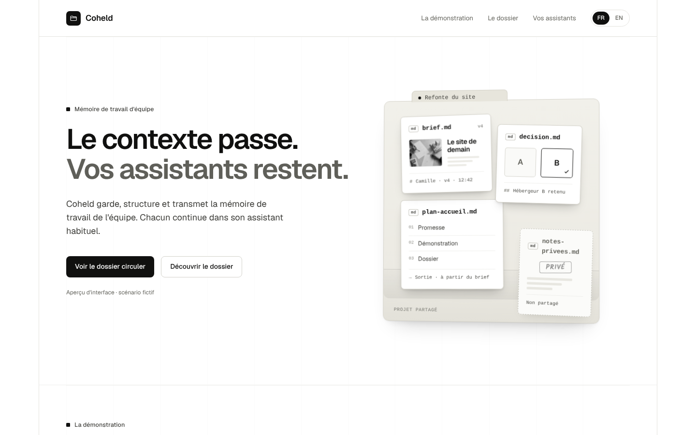
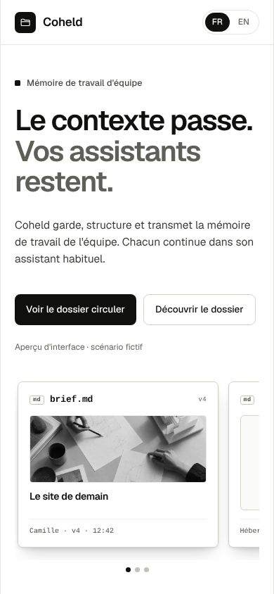
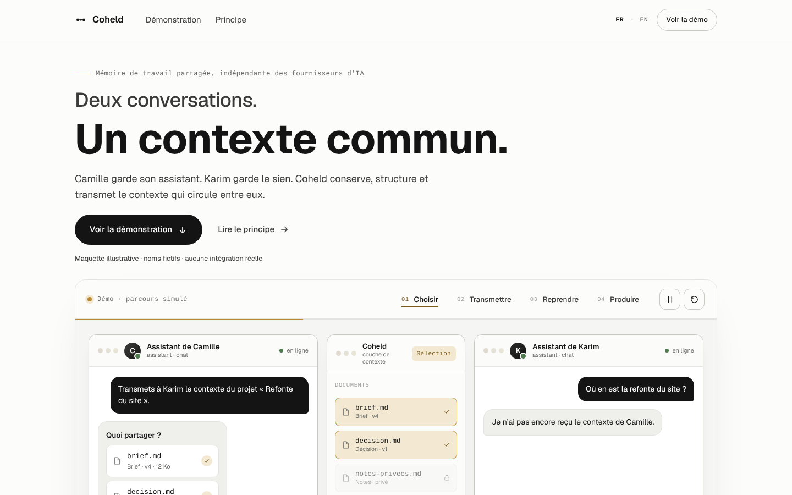
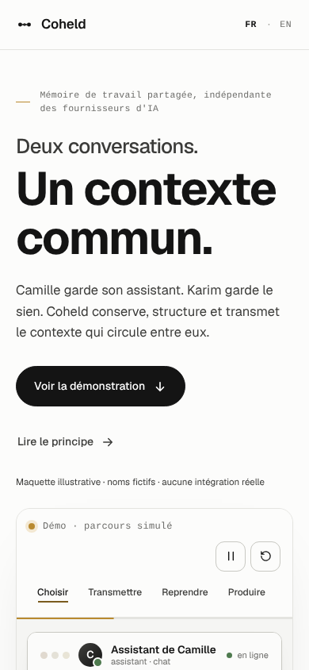

01 / 03
Éditorial
L’accueil comme un numéro de revue de design : grille éditoriale, typographie massive et scène produit pilotée par onglets.
Accent : aucun — noir & blanc strict (hérité)


Étude d’accueil · maquettes
Trois directions de design, au même niveau de soin, pour ouvrir Coheld différemment. Chacune couvre uniquement la page d’accueil et sa démonstration produit.
Maquettes illustratives · scénario fictif · noms fictifs · aucune connexion réelle aux assistants. Aucune direction n’est choisie : elles sont à valider par Louis.
L’accueil comme un numéro de revue de design : grille éditoriale, typographie massive et scène produit pilotée par onglets.
Accent : aucun — noir & blanc strict (hérité)


Le contexte Markdown comme un objet : un dossier de projet ouvert, des fiches .md lisibles, transmises de Camille à Karim.
Accent proposé : bille bleue #2340C8


Deux assistants, une couche de contexte : les conversations restent privées, le contexte circule et devient une sortie .md.
Accent proposé : or d’encre #B98A2F

